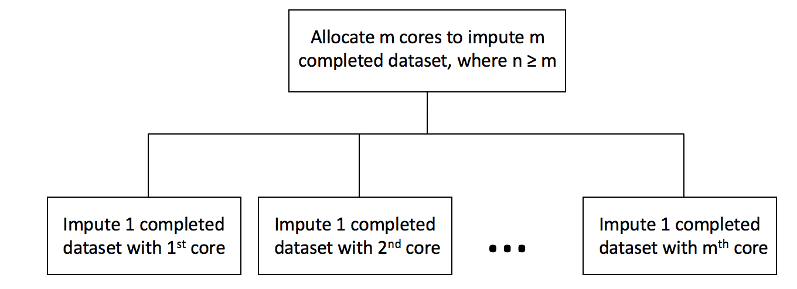
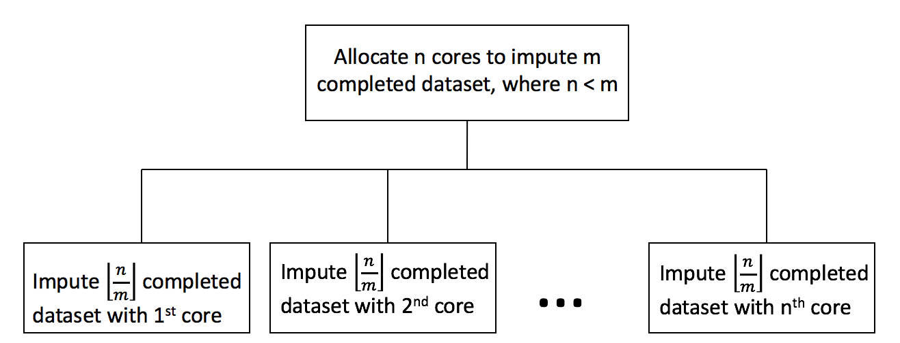

Chapter 4 Missing Data Imputation
4.1 Missing Data
[In social science research, survey item-nonresponse and data recording errors often lead to missing data. The OPM data is no exception.] Rubin classified missing data into three properties: missing completely at random (MCAR), missing at random (MAR), and not missing at random (NMAR) (Little & Rubin, 2014). First, data has MCAR property when the probability of observations being missing is unrelated to any variables. Second, data has MAR property when the probability of missing only depends on observed values but not on unobserved values. Though there are no formal ways to verify the MAR property, it is usually a reasonable assumption when we do not have comprehensive knowledge of the data. Third, data that cannot be attributed to either MCAR or MAR has NMAR property - the probability of missing depends on both observed and unobserved values. To assess missing mechanisms of the OPM data, we examined the nature and patterns of variables with missing data. In general, the missingness of the OPM data can be summarized into two categories - inherent missingness and missingness due to time constraint.
First, the OPM data contain more than 20 years of federal employees’ information. As rules and standards change overtime, recording errors would naturally generate missing data. For example, Race variable was originally classified into 16 categories, but new standard established in 2016 simplified it into 6 categories. The main strategy to address the missingness of Race variable is to convert old recording standard to new standard. However, small percentage (less than 0.01%) of data is still missing even after conversion. Education Level is another variable that has missing data. The fact that employees might not fill in and update their personal information could lead to the missingness of Education Level (Figure 4.1).
Figure 4.1: Inherent Missingness Independent of Time
Second, the OPM database was not created until 1988, so information regarding employees started before 1988 would not be recorded. For example, if an employee worked between 1980 and 1990, the OPM data would only record this employee’s information from 1988 to 1990, but data from 1980 to 1987 would be missing. Variables that change overtime belong to this category. As mentioned previously, a Federal employee’s salary is determined by particular grade, step rate and pay plan. Since Pay plan, Grade, Step Rate, and Salary are associated, these four variables have the same missing patterns. Specifically, the proportion of missing data decreases as year increases (Figure 4.2).
Figure 4.2: Missingness due to Time Constraint
Regardless of time constraint, the missingness of variables is related to the characteristics of observed variables. For example, employees with higher education level are more likely to receive higher starting salary. In other words, the missing salary information is related to observed education level and other variables, confirming that the data are not MCAR. Because no additional information indicates the NMAR property, we should be fairly comfortable to assume MAR for the OPM data.
4.1.1 Addressing Missing Data
The loss of information from missing data would produce bias and impact the robustness of statistical modeling and inference. To address this problem, it is necessary to impute the missing data. In the next section, we would explore various imputation methods and strategies depending on the structure and the nature of the missing data.
4.2 Overview of Multiple Imputation
Multiple Imputation (MI) is a flexible approach for researchers to address the problem of missing data. The method for carrying out multiple imputation involves: (1) fill in the missing values through drawing values from predictive conditional distribution to produce \(m\) completed datasets; (2) for each completed dataset, conduct analysis for parameters of interest; and (3) combine individual analysis to form final results (Little & Rubin, 2014). Multivariate imputation by chained equation (MICE), where multiple imputed datasets are created through drawing samples sequentially from predictive conditional distribution, is often applied to generate multiple completed datasets at step (1). MICE is one of the most popular approach for imputing missing data. It provides flexible imputation results and can handle both continuous and categorical data. The implementation of MICE involves the following steps.
Here, we assume we have a \(n \times k\) data matrix \(Y\), where \(Y_1, Y_2, .., Y_j\) are completely observed and \(Y_{j+1}, Y_{j+2}, ..., Y_k\) are partially observed.
Step 1
For \(i = j+1, ... , k\), fill in initial missing values of \(Y_i\) through draws from predictive conditional distribution \(Y_i|Y_1, Y_2, ..., Y_j\).
Step 2
For \(i = j + 1,...,k\),
(a) construct a predictive distribution for \(Y_{i}\) fully conditional on \(Y_{-i} = Y_1, Y_2, ... , Y_{i-1}, Y_{i+1}, ... , Y_k\).
(b) Draw values from the conditional distribution \(Y_i|Y_{-i}\) and update the original missing values of column \(Y_i\).
Step 3 Perform step 2 for \(l\) times.
Step 4 Perform step 1-3 for \(m\) times to generate \(m\) completed datasets.
We applied MICE to impute missing values in the OPM data, where \(l = 20\) and \(m = 12\). Since the robustness of MICE is dependent on the predictive conditional distribution, one strategy to improve imputation result is to include any “auxiliary variables” that are related to the missingness but not part of the covariates. The inclusion of “auxiliary variables” can make the MAR assumption more reasonable (Collins, Schafer, & Kam, 2001). In the OPM data, variables such as Pay Plan and Step Rate are not parameters of interest to the final analysis. However, both variables provide information on the missingness of Salary and Grade, so we included them in the imputation model. Another auxiliary variable we included is salary between working year 11 and 15. Though we are only interested in the rate of change in salary between working year 1 and 10, salary between working year 11 and 15 can help predict past salary change rate.
4.3 Specifying predictive conditional distribution - the CART method
In the practice of MICE, one of the most common models for specifying predictive conditional distribution is Generalized Linear Models (GLMs). GLMs such as multiple linear regressions often produce consistent imputation results. However, if the data to be imputed contain hundreds of variables, GLMs might be too simple to capture the true distribution. For example, relationships among variables might be interactive and non-linear. Specifying parametric models for data with great complexity is therefore inappropriate (Burgette & Reiter, 2010). The OPM data contains 65 variables. Eeach categorical variable has various levels. Since non-linear relationships might exist among multiple variables and levels, specifying the standard GLMs on the conditional distribution could lead to biased parameter estimates and produce inconsistent results. To address this challenge, non-parametric model can be more appropriate; specifically, we used Classification and Regression Trees (CART) to impute missing data.
The CART algorithm performs binary splits of the predictors recursively to approximate the conditional distribution of an univariate outcome. The partitions are found if the subsets of units have relatively homogeneous outcomes. The leaf would be reached after multiple partitions, with values in each leaf representing the conditional distribution of the outcome. If the outcome variable is categorical, Classification Tree would be adopted; on the other hand, Regression Tree would be implemented if the outcome variable is continuous. For its application in MICE, we would use CART to derive the conditional distribution for each \(Y_i\) on the completely observed variables in step 1 and each \(Y_i\) given \(Y_{-i}\) in step 2 (Burgette & Reiter, 2010) (Doove, Van Buuren, & Dusseldorp, 2014).
Though one of the disadvantages of the CART method is its difficulty for model interpretations when the number of tree level is high, it should not be our major concern because the goal is to plausibly impute the missing data. Indeed, the application of non-parametric CART models in MICE can result in “more reliable inferences compared with naive applications of MICE” (Burgette & Reiter, 2010).
4.4 Improving computational efficiency
The CART method is computationally efficient if predictors to be split are continuous variables. On the other hand, if predictors to be split are categorical variables, the CART method might encounter computational difficulties when the variable has multiple levels. If a categorical variable has \(n\) levels, the CART method would examine every possible splits, which results to \(2^{n}\) possible partitions. In the OPM data, variable Grade has more than 20 levels, which means there are more than \(2^{20} \approx 1\) million possible partitions.
One solution to increase the computational efficiency of the CART imputation method is to reduce the number of levels for categorical variables. For example, we reduced Pay Plan from 173 categories into 7 categories. The OPM defines pay plan as “a two-digit alphabetical code used to identify Federal civilian pay systems” (Office of Personal Management (OPM), n.d.). The most common pay plan in the OPM data is the General Schedule pay system, which covers around 78 percent of white-collar Federal employees. Other pay plans cover employees who have unique occupations or serve for particular agency. For example, the AL pay plan applies to administrative law judges, and SV refers to pay plan in the Transportation Security Administration. Because some pay plan codes are only applicable to relatively small subset of population, we decide to merge pay plans with small sample size into “others” category. The table below is the simplified pay plan after merging.
| Type | Codes |
|---|---|
| General Schedule | GS, GM |
| Non General Schedule | AD, ES, SV, VN, Others |
Another strategy used to increase the computational efficiency is through applying parallel computing technique on Step 4 of the MICE. The implementation of the parallel computing includes the following steps.
Here, we assume we want to impute \(m\) completed datasets with \(n\) cores.
If (\(m \leq n\))
allocate \(m\) cores
conduct Step 1 to Step 3 of MICE once for each core in parallel

else
allocate \(n\) cores
conduct Step 1 to Step 3 of MICE \(\lfloor{\frac{n}{m}}\rfloor\) times for each core in parallel

4.5 Imputation results and predictive checks
We generated 12 completed datasets with the CART imputation model. The validity of the imputed datasets depends on the use of an appropriate imputation model, so it is important to check whether the model yields reasonable results. We applied predictive checks to assess imputation model adequacy. Predictive checks is a Bayesian model checking technique designed to investigate the potential model inadequacy between imputed and replicated datasets. Though our imputation model is not fully Bayesian, predictive checks could still be used to measure the predictive differences between imputed and replicated data (He & Zaslavsky, 2012).
Denote \(Y = (Y_{1}, Y_{2}) = ((Y_{1,obs}, Y_{1,mis}), Y_{2}))\), where \(Y_{1}\) is partially observed and \(Y_{2}\) is completely observed. To generate replicated data \(Y_{com}^{rep}\), the steps involve: (1) create duplicates of \((Y_{1}, Y_{2})\); (2) set duplicated \(Y_{1}\) as completely missing; (3) combine \(((Y_{1,obs}, Y_{1,mis}), Y_{2})\) and \((Y_{com}^{rep}, Y_{2})\) to form concatenated dataset; and (4) re-impute concatenated dataset with original imputation model. Figure 4.3 (He & Zaslavsky, 2012) shows the re-imputation process.

Figure 4.3: Generate replicated dataset
Our parameter of interest is the relationship between year 1 and year 10 salary. We assessed model adequecy through comparing the distribution of working year 1 and year 10 salary between imputed and replicated datasets. If the distribution of imputed datasets and the distribution of replicated datasets are similar, then imputation model provides plausible fit to the data. We generated replicated dataset with two methods. First, we conducted re-imputation 12 times by setting duplicated \(Y_{1}\) (variables with missing values) as completely missing. Second, we conducted re-imputation 12 times by only setting salary at working year 1 and 10 in duplicated \(Y_{1}\) as completely missing. Figure 4.4 shows the result of the first method, and Figure 4.5 shows the result of the second method.

Figure 4.4: Salary distribution of method 1
Figure 4.5: Salary distribution of method 2
For both figures, the x-axis represents salary at working year 1, and the y-axis represents salary at working year 10. Since salaries for employees with SES and non-SES position tend to vary a lot, we visualized the salary distribution separately for employees with SES position and non-SES position. Note that both figures are visualization of one replicated and one imputed datasets. (We compared all 12 replicated and 12 imputed datasets. Since they all yielded similiar results, we only included one here.)
Figure 4.4 shows that the distributions between imputed and replicated datasets for both positions are different, indicating that our imputation model is not a good fit to the data. However, this method might not be ideal because the imputed values of year 1 and year 10 salary are dependent on other partially missing variables. The second method provides a better model diagnostic. Figure 4.5 shows that the distributions between imputed and replicated datasets for both positions are similar, implying that our imputation model provides plausible fit to the data.